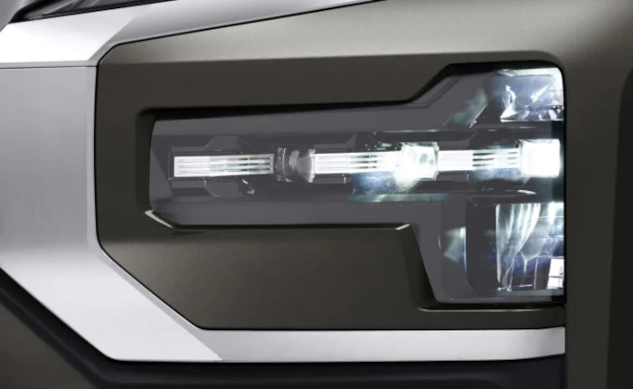
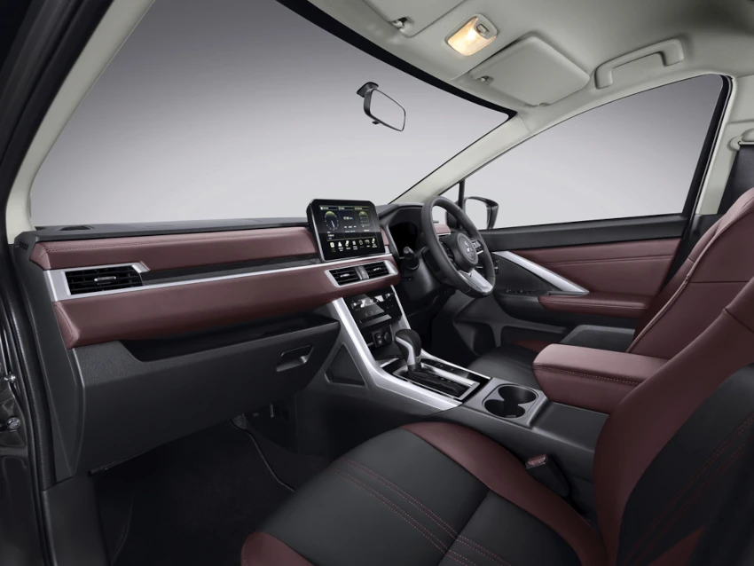
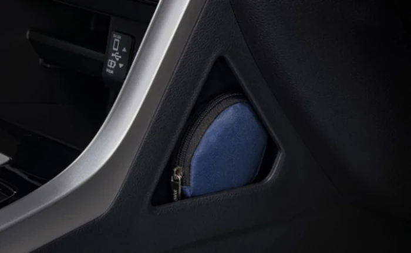
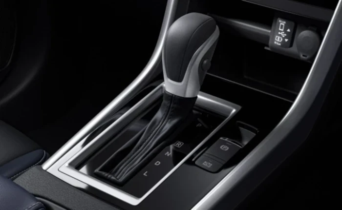
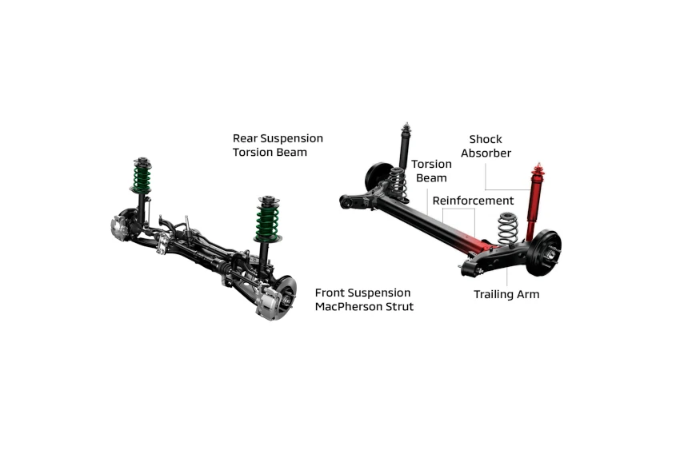

New Xpander Cross masih menjadi salah satu produk andalan bagi Mitsubishi di Indonesia. Terlebih lagi model ini telah mengalami penyempurnaan baik dari segi tampilan, maupun fitur-fitur yang menunjang kenyamanan dan keamanan berkendara.
New Xpander Cross yang hadir dengan desain ‘Dynamic Shield’ khas Mitsubishi Motors mendapat pembaruan, seperti T-Shape Headlamp, Front & Rear Powerful Bumper Design, 17- inch Alloy Wheel Design, LED Fog Lamp, Distinctive Trapezoid Grille, Wheel Arc Moulding yang disempurnakan, serta DRL (Daytime Running Lamp).
Menurut Rifat Sungkar, pembalap professional sekaligus Brand Ambassador Mitsubishi Motors Indonesia, fitur DRL ini bukan hanya pemanis, tetapi tujuan utama DRL adalah awareness, khususnya awareness dari pengguna jalan lainnya terhadap kehadiran kendaraan kita.


| Type Mobil | Harga |
|---|---|
| Cross Premium CVT |
|
| Cross MT |
|
| Ultimate CVT |
|
| Exceed CVT |
|
Hadir dengan tampilan eksterior baru, berikan kesan lebih tangguh. Bersiaplah untuk petualangan seru selanjutnya.
Dilengkapi dengan fitur canggih pada digital display pengemudi yang lebih lengkap dan leluasa, membuat pengalaman berkendara Anda lebih berkesan.
Hadir memberikan rasa percaya diri saat berkendara dengan fitur keselamatan canggih, pengalaman berkendara menjadi aman dan nyaman di segala kondisi medan.
Tampilan depan dengan tebal dan garis tegas membuat kendaraan terlihat gagah di segala medan.
Alloy wheel berukuran 17 inci dengan desain dan tangguh, memberikan stabilitas dan kenyamanan saat berkendara.

Desain bumper belakang tampil lebih tegas dan elegan, dilengkapi detail aksen yang memperkuat karakter SUV.
Lampu depan berbentuk T-shape melengkapi kesan gagah dari tampilan depan mobil dan meningkatkan visibilitas mobil dari arah depan.
Selain meningkatkan visibilitas pada malam hari, lampu belakang dengan bentuk T-shape memperkuat desain modern dari Xpander Cross.
Dilengkapi dengan LED Foglamp yang menyediakan visibilitas terbaik dalam kondisi hujan dan berkabut saat berkendara.
Desain horizontal axis pada dasbor dipadukan dengan material halus, menghadirkan kesan kenyamanan optimal serta sentuhan elegan dan premium di dalam kabin.
Layar sentuh berukuran 10 inci memberikan kemudahan untuk navigasi, menyetel musik, dan fitur hiburan lainnya melalui konektivitas smartphone.

Desain kemudi terbaru memberikan kesan sporty dan menjamin kendali yang ergonomis saat berkendara.
Kursi kulit sintetis dua warna memberikan sentuhan elegan dan premium pada kendaraan. Dilengkapi fitur pelindung panas yang memastikan kursi tetap sejuk dan nyaman meskipun terkena sinar matahari langsung.
*Hanya tersedia di CVT Premium
Electric Parking Brake dan Brake Auto Hold memudahkan pengguna dengan mengganti rem konvensional ke tombol elektronik.
*Hanya tersedia di CVT Premium

Memberikan kenyamanan pengemudi saat berkendara, panel digital berukuran 8 inci menampilkan informasi real-time dan mudah dibaca.
Arm rest terbaru di baris kedua meningkatkan kenyamanan penumpang dengan dua tempat gelas yang berada di tengah.
Memberikan kenyamanan saat bepergian, tempat duduk di barisan kedua didesain luas agar memberikan ruang yang lebih lega untuk para penumpang.
Bagasi yang lapang mampu menampung banyak muatan besar sesuai dengan kebutuhan Anda
Menyediakan ruang tambahan untuk penyimpanan barang kecil yang mudah dijangkau oleh pengguna.
Dengan kompartemen di bawah lantai bagasi, pengguna dapat menaruh lebih banyak muatan sesuai dengan kebutuhan.
Menyediakan ruang tambahan untuk muatan kecil ke sedang, memudahkan pengguna menyimpan barang pribadi.
Kompartemen penyimpanan tertutup di antara kursi depan memberikan ruang penyimpanan barang pribadi agar tetap rapi selama perjalanan.
*Hanya tersedia di CVT Premium
AC digital memberikan pengaturan suhu yang lebih presisi dan tampilan yang lebih modern dibandingkan AC manual.
Dengan 6 SRS airbags pengguna mendapatkan perlindungan keselamatan optimal selama berkendara.
Sistem pengereman AYC mengontrol perbedaan antara gaya penggerak dan pengereman di sisi kiri dan kanan untuk mengoptimalkan kestabilan kendaraan ketika bermanuver secara cepat atau di jalan yang licin.
Multi around monitor menampilkan pandangan 360 derajat di sekeliling kendaraan, membantu pengemudi saat parkir dan bermanuver dengan lebih aman dan presisi.
Dengan Hill Start Assist, pengguna dapat lebih nyaman berhenti dan melaju kembali di jalanan terjal, menanjak maupun menurun, tanpa risiko kendaraan mundur.
Active Stability Control memberikan keamanan saat berkendara dengan menjaga mobil tetap stabil sepanjang perjalanan.

Fitur yang membantu Anda mengatur laju kendaraan dan menghindari rem terkunci saat melakukan pengereman atau saat melintasi jalan licin.

Mesin yang telah dirancang untuk memberikan keseimbangan antara tenaga, efisiensi bahan bakar, dan responsivitas saat berkendara.
Seiring kecepatan kendaraan meningkat, CVT dapat meminimalisir beban kerja mesin dan memaksimalkan efisiensi bahan bakar.
Suspensi dengan penyetelan baru menjadikan berkendara lebih nyaman di berbagai medan. Nikmati pengalaman berkendara dengan setir kemudi yang memiliki stabilitas dan pengendalian terbaik.
Fitur ini dapat mempertahankan kecepatan mobil tanpa perlu menekan pedal gas, memudahkan berkendara di jalan tol atau perjalanan jauh.
*Hanya tersedia di CVT Premium
Kabin mobil didesain khusus untuk meredam suara, menghadirkan suasana tenang dan nyaman di setiap perjalanan.
*Hanya tersedia di CVT Premium
Halo! Ada yang bisa kami bantu?
Chat Sekarang